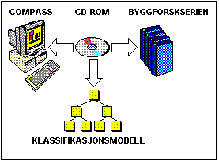

COMPASS
COMputer ASsisted Search

- Samarbeidsprosjekt Norges Byggforsknings Institutt og Andersen
Consulting
- Formål:
- Utvikling av et søke/presentasjonssystem for store kunnskapsbaser
- Kunnskapsbase:
- Ca. 4.000 figurer
- Ca. 2.000 tabeller
- Ca. 1.000 sider A4 tekst
- Konvertering fra papir representasjon til elektronisk representasjon (CD-ROM)
- Teknologi:
- Objektorientert systemutvikling og kunnskapsmodellering
- Microsoft Windows
- C++
- CD-ROM basert lagring